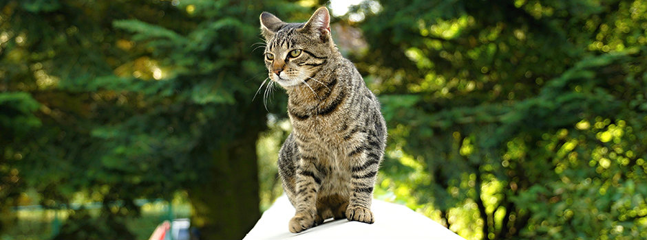
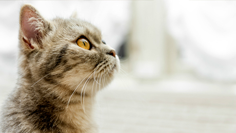

Diferentes raças de gatos
Raças de gatos britânicos
A raça de gato britânico de pêlo curto, British Shorthair deriva dos gatos domésticos e tem uma vasta gama de cores e de tipos de pêlo, do branco ao negro, ao cinza. Estes gatos tiveram origem no séc.19, para garantir que as suas caraterísticas eram preservadas, até que British Shorthair foi reconhecido como raça.
Um toque de Persa e Oriental foi adicionado para reviver a raça, quando esta estava prestes a desaparecer em meados do séc.20. O Cabelo Curto Britânico é robusto e saudável, com um corpo musculado e pernas curtas.
Tem um focinho redondo, olhos grandes e encantadores e pelo espesso e curto. Tal como o Persa, este tipo de gatos são independentes e pouco exigentes, passando alegremente muito tempo para a de casa, mas apreciando uma boa festa se para do seu tutor.
Outras raças de gatos britânicos incluem o Manx e o Selkirk Rex.
Birmanês
Esta é uma raça de gato que gosta de se fazer notar! São gatos vocais (mas não tanto como os Siameses), muitas vezes chamados os "cães gatos", por sua segurança, fidelidade canina para com o tutor e vontade de brincar aos jogos do "ir buscar". Adoro associar-se ao que quer que esteja a fazer e este engloba sentar-se no jornal, se por acaso está a acaso está a abr-lo; é este tipo de gato. O birmanês tem um corpo robusto, tronco redondo, cabeça redonda e olhos grandes e uma inclinação semelhante aos Siameses. Também possuem um pelo macio, curto, aveludado, cujas cores podem variar bastante.
Estrangeiro
As raças de gatos incluídas neste grupo tem pouco em comum umas com os outros, a não ser pelas personalidades fortíssimas. Desde o raro e de aspecto selvagem Bengala, obtido pelo cruzamento de um gato doméstico com um gato Asiático Leopardo, passando por Devon Rex de aspecto endiabrado, este é um grupo de gatos bem diferentes. Inclui o Tiffanie de longo pelo, o encaracolado Cornish e o Devon Rex. Até as diferenças de tamanho são visíveis - desde a grande Bengala até o pequeno Singapura. Foram obtidos por cruzamento ou adaptação de raças já existentes. As raças de gatos estrangeiros são geralmente gatos que gostam de pessoas. Ativos e exigentes, são o tipo de gato que o incomodam quando quer comer, brincar ou ser acarinhados e recusar ser ignorados!
Oriental
Estes gatos apresentam-se em dois tipos: pelo curto e pelo comprido. O de pelo curto é uma espécie de siamês, mas sem marcas nas extremidades (nas pernas, cauda, focinho e orelhas tem um cor mais escuro do que no resto do corpo). A variedade de pelo comprido é chamado o Angorá. Um gato da raça oriental tem muitas vezes traços físicos e de carácter semelhantes aos Siameses, embora apenas a variedade de cor branca apresente impressionantes olhos azuis; os gatos de outros núcleos tem olhos amarelos ou verdes.
Rio Persa
O Persa é a quintessência do universo dos gatos. Uma das raças de gatos mais antigas, a sua glória é o pelo: longo, espesso e abundante, que pode atingir 16 cm de comprimento! Os gatos Persa tem pernas muito curtas, pescoço curto e tórax largo. A cauda em forma de escova é de uma espessura magnífica e ainda possuem uma gola semelhante a uma juba. Com pelo com estas características é necessário ser escovado todos os dias, pelo menos durante 20 minutos. Os olhos também requerem atenção, por ter tendência a lacrimejar. Com tantas núcleos e formas, há na verdade um gato persa para todos! O caráter do gato persa é descontraído e calmo. São ótimos animais domésticos e adoro dormitar, o que é ideal se trabalhar o dia todo. Contudo, para o impedimento de se aração sozinho durante o dia é essencial um outro gato Persa, para que possam brincar juntos e fazer meiguices.
Gatos de pelo semi-longo
Este grupo engloba seis raças de gatos que diferem bastante no aspeto e temperamento, embora partilhem um por semelhante e comprido (embora não tão longo quanto o persa).
Guaxinim do Maine
Esta é uma raça de gatos grandes e elegantes, que tem suportado os invernos frios do Maine, na costa oriental dos Estados Unidos - daí o pelo longo, espesso e impermeável. Tem uma gola plissada em torno do pescoço que protegido os ouvidos interiores e orelhas peludas - para os protegerem. A sua cauda em forma de escova lembra a do guaxinim (Racoon), daí a terminação do nome. Elegantes, bem proporcionados, atléticos e poderosos, os gatos desta raça necessitam de muito estímulo e adoram estar ao ar livre. São exímios caçadores e raramente se incomodam com o frio e a humidade; o clima britânico em nada se compara ao que os seus antepassados tiveram de suportar! Os Maine Coons não são gatos domésticos por excelência, mas gostam de passar o tempo com a família e são encantadores e jogos, muitos bons para serem treinados.
Bosques da Noruega
Tal como o Maine Coon, o Bosques da Noruega é outro sobrevivente do clima hostil do norte da Escandinávia. Grande e forte.com as pernas traseiras particularmente poderosas e compridas, são um género de gato muito elegante e considerado bastante atraente. Esta raça de gato foi especialmente criada para trepar e, tal como o nome sugere, adorando fazer-lo nas árvores. Ter uma árvore interior em casa para estes gatos pode ser uma excelente ideia (especialmente para o distrair de subir cortinados e armários). Grandes apreciadores da vida ao ar livre, os gatos da raça Bosques da Noruega também gostam da companhia humana.
Ragdoll
Originariamente fruto do cruzamento entre uma gata Persa branca e um macho Birmanês, o espantoso Ragdoll é um simpático gigante - grande, pesado, mas extremamente calmo. Os gatos desta raça de gato tem bochechas cheias, olhos grandes e ovais e pescoço pequeno. Apesar do seu tamanho tem uma aparência delicada. O nome deriva do seu hábito ocasional de estarem tão relaxados quando se eles pegam que ficam moles - tal como uma boneca de pano. Calmo e muitíssimo afetuoso, esta raça de gatos é ótima para casa, muitas vezes menos interessada em caçar do que outras raças de gatos mais robustas.
Siamês
Uma antiga raça de gatos, talvez das mais elegantes. Tem um corpo comprido e esbelto, patas traseiras podentes e espantosos olhos azuis. Tal como a raça do gato Persa, a raça Siamesa tem-se alterado bastante ao longo dos anos. A cabeça é agora mais triangular, os olhos mais oblíquos, como orelhas maiores e o tronco mais pequeno e atlético. O pelo do Siamês é "listado" com as extremidades mais escuras do que o resto do corpo, particularmente nas pernas e patas, focinho, orelhas e cauda. O pelo é macio e sedoso, com uma pequena camada mais interior. Embora exijam pouco cuidado com escovar o pelo, o Siamês é um gato o tempo inteiro, que geralmente gosta das pessoas e pede muita atenção. Muito voluntários e inteligentes, sabem como ocupar o seu tempo!